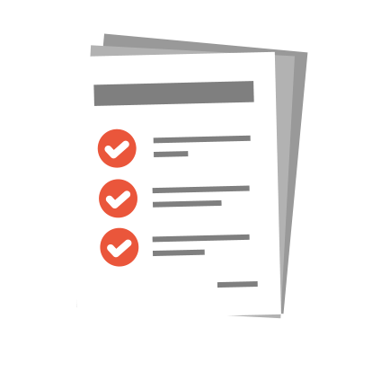

  <!-- Views -->
    <div class="views">
      <!-- Your main view, should have "view-main" class -->
      <div class="view view-main">
        <!-- Pages container, because we use fixed navbar and toolbar, it has additional appropriate classes-->
        <div class="pages navbar-fixed toolbar-fixed">
          <!-- Page, "data-page" contains page name -->
          <div data-page="conditions" class="page">
             <!-- Top Navbar. In Material theme it should be inside of the page-->
     <div class="page-content infinite-scroll" data-distance="100">

      <div class="content-block margin-right-left"><!-- container responsive -->
        <div class="row underline">
      <div class="col-25 tablet-20  main_logo">
        <a href="tasks.html"></a>
      </div>
      <div class="col-75 tablet-80">
        <ul class="top_menu">
         <li><a href="gis.html"><span>back</span> <i class="fa fa-chevron-left"> </i></a></li> 

          <li><a href="index.html"> <span>log out</span> <i class="fa fa-sign-out"></i> </li></a>
          <li><a href="#"> <span>Hello Odai</span> <i class="fa fa-user"></i> </a></li>
        </ul>
      </div>
    </div>
    
                                 
    
    <div class="row no-gutter">
      <div class="col-100 tablet-100 sub_title_section" style="background-color:#0e3c91;">
        <div class="title_icon"></div>
        <h2>Orders</h2>
      </div>
    </div>


<div class="content-block-title">Time : 2:30 PM</div>

<div class="content-block-title">Borrower : David Smith</div>
<div class="content-block-title">Borrower Number : (515) 777 9865</div>
<div class="content-block-title">Closing Location : 666 Ashworth DR <br>
Des Moines <br>
IA <br>
50325 <br>

</div>


<a href="end.html">
   <button class="update-closing">Update Closing</button>
 </a>


  </div> <!-- end container responsive -->   
          </div>
        </div>
      </div>
    </div>
    </div>